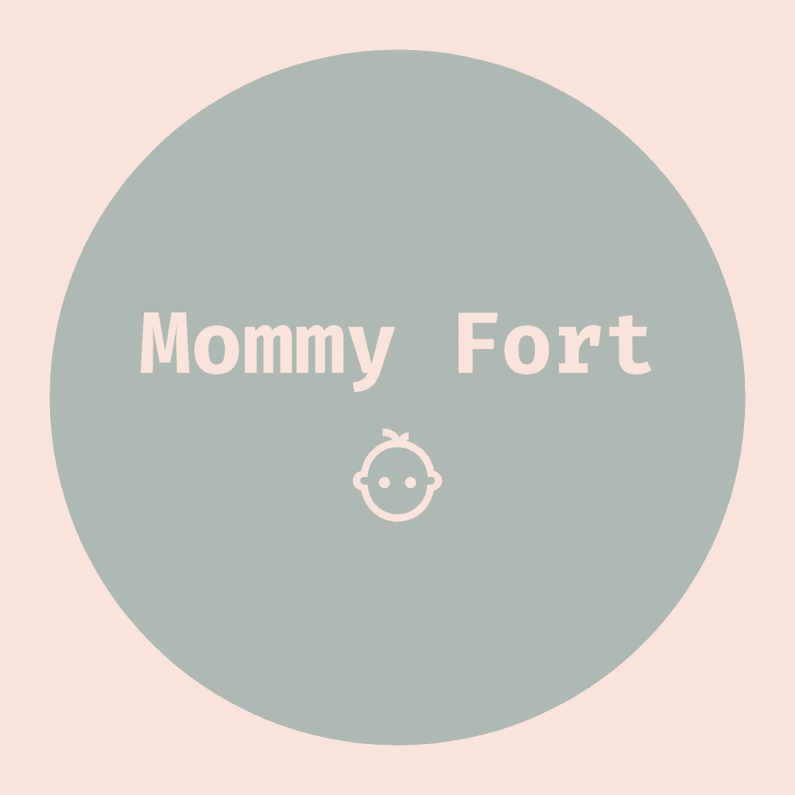
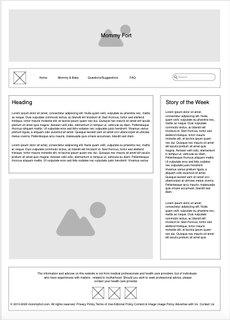
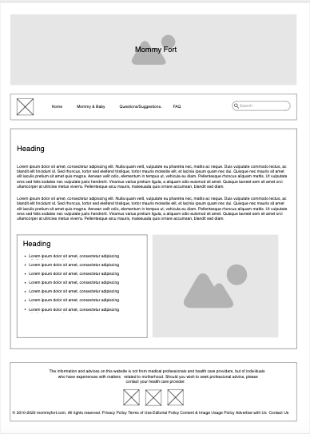
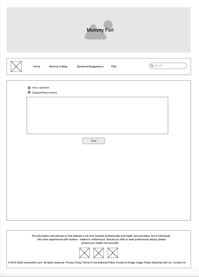

Purpose
To all mothers, especially new moms who are looking for recommendations, support, ideas, and ways on how motherhood can be fun and rewarding.
Target Audience
Mothers, new moms, expecting mothers, and husbands who are looking for ways to support their wives.
Website Logo
Style Guide
Color Palette
https://coolors.co/2c6e49-4c956c-fefee3-ffc9b9-d68c45
| Primary | Secondary | Accent 1 | Accent 2 |
|---|---|---|---|
| #f4d06f | #FFF8F0 | #FF8811 | #9DD9D2 |
Typography
Yellow Tail & Noto Sans KR
Navigation
Wireframes
Mommy Fort Wireframe (Home)
Mommy Fort Wireframe (Mommy and Baby)
Mommy Fort Wireframe (Questions/Suggestions)
Mommy Fort Wireframe (FAQ)